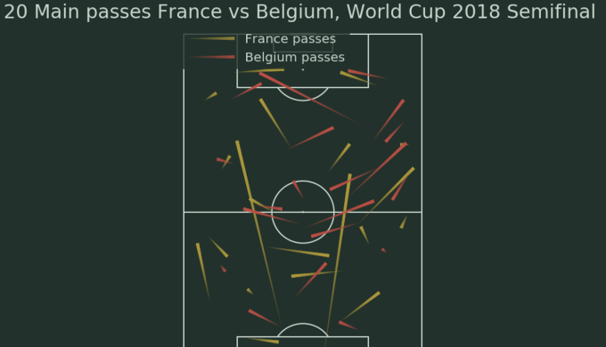
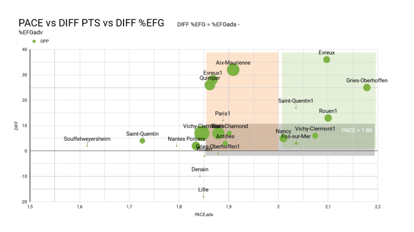

By scoring 50 goals during the 2011-2012 season, Lionel Messi was (slightly) under-performing. Find out why! Python
Find on Medium
Find on Gitlab
Web scrapping of PRO B (French second division) basketball match statistics and production of analysis. Python - Scrapy

Tutorial : Pass clustering with Sklearn through the example of France-Belgium, 2018 World Cup semi-final.
Find on Medium

Statistical Analysis PRO B Basket 2019-2020 [Part 1: General Overview] in R
Find on Medium